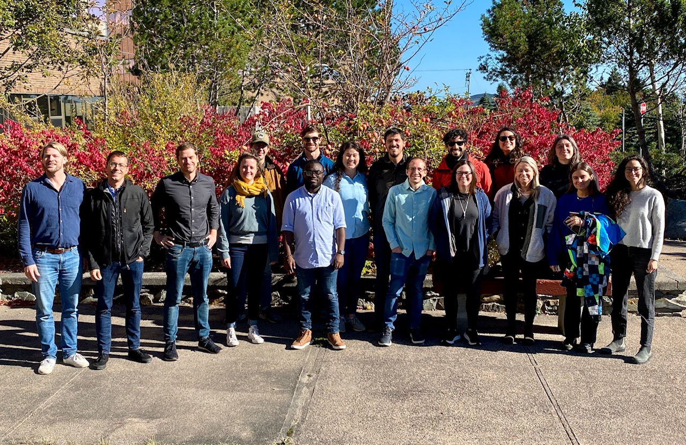

Events
Check out our upcoming and recent past events on this page.
Upcoming:
ISIMIP Proclias Workshop - Prague, June 5th- June 8th 2023, - more details here!
Joint FishMIP-NOAA Workshop - Tuesday, August 29th - Friday, September 1,2023 Honolulu, Hawai’i, USA
Location: TBD, likely in Waikiki area of Honolulu
NOAA’s National Ecosystem Modeling Workshop (NEMoW) and FishMIP are coordinating a joint meeting to assess and expand regional climate-ecosystem modeling capacity. The meeting will include a mixture of presentations, discussions and hands-on tutorials. Workshop sessions will visit key topics including:
understanding attribution and advancing skill testing in ecosystem models;
representing temperature-dependencies and other climate forcings in ecosystem models;
improving methods for downscaling climate projections in both data-rich and data-limited regions;
evaluating whether global climate projections represent important regional-scale ecosystem processes.
The general format Tuesday through Thursday will include presentations and discussions in the morning followed by interactive activities in the afternoon. Friday will be dedicated to FishMIP business and focus on preparing regional modelers for contributing to FishMIP simulations. Virtual attendance will be facilitated.
Limited travel support is available for non-US citizen early career scientists and scientists from developing nations. Applications for travel support must be obtained by May 23rd, 2023. Use this form to apply for travel support
Regular online modeller meetings - To assist with simulation rounds we meet regularly with modelers to troubleshoot any issues and implementation. Please contact regional and global model coordinators to join these.
Recent past events:
FishMIP Community Virtual Meeting, January 27th, 2023 (7-9 am AEDT)
The FishMIP 2022 International Workshop took place in St John’s, Newfoundland Canada and online, Oct 3-7th.

The workshop was co-funded by the SOMBEE project, The Fisheries and Marine Institute of memorial University of Newfoundland and The Institute for Marine and Antarctic Studies, University of Tasmania. We supported travel for seven Early Career Researchers were supported to attend this meeting.
Full programme including abstracts here.
Access to slides and recordings are available on request.
The ISIMIP-Proclias cross-sectoral workshop took place 16-19th May 2022. See summary here.